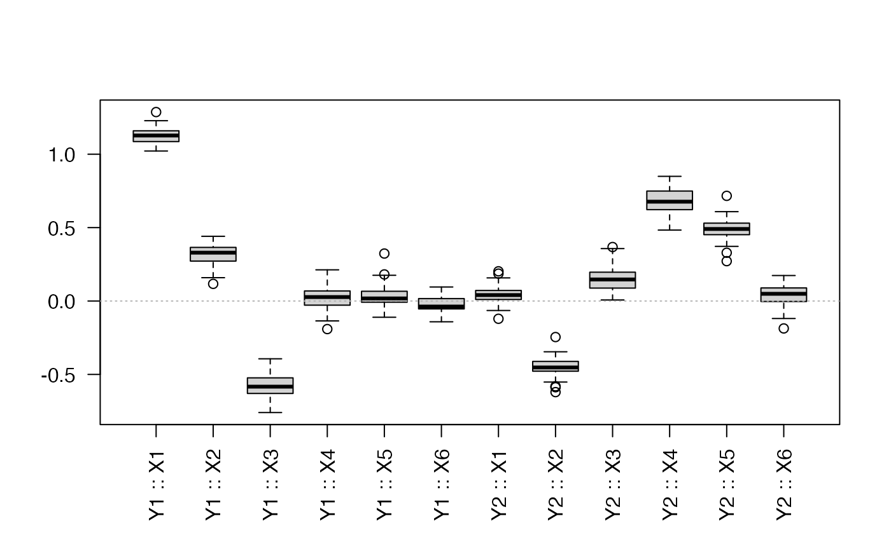
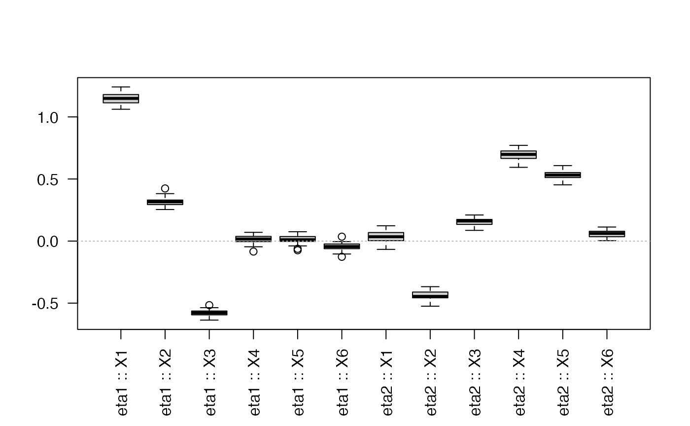

Bootstrap strategies for bigPLSR
Frédéric Bertrand
Cedric, Cnam, Parisfrederic.bertrand@lecnam.net
2025-11-10
Source:vignettes/bootstrap-strategies.Rmd
bootstrap-strategies.RmdIntroduction
bigPLSR now provides two complementary bootstrap
procedures:
- (X, Y) bootstrap refits the full regression model on resampled pairs.
- (X, T) bootstrap keeps the latent components of the original fit and resamples the score structure, delivering fast updates of the regression coefficients.
Both approaches expose percentile and BCa confidence intervals, numerical summaries and plotting helpers.
We rely on a small multivariate example to illustrate the workflow.
Baseline fit
fit <- pls_fit(X, Y, ncomp = 3, scores = "r")(X, Y) bootstrap
boot_xy <- pls_bootstrap(X, Y, ncomp = 3, R = 50, type = "xy",
parallel = "none", return_scores = TRUE)
head(summarise_pls_bootstrap(boot_xy))
#> variable response mean sd percentile_lower percentile_upper
#> 1 X1 Y1 1.12720380 0.05483111 1.03357126 1.22790239
#> 2 X2 Y1 0.31715126 0.07184301 0.16076652 0.43387511
#> 3 X3 Y1 -0.58032760 0.07402063 -0.71756064 -0.44816272
#> 4 X4 Y1 0.01629040 0.07403399 -0.13117394 0.11615478
#> 5 X5 Y1 0.03428052 0.08010332 -0.09078452 0.17987746
#> 6 X6 Y1 -0.02468821 0.05931838 -0.14013792 0.07848342
#> bca_lower bca_upper
#> 1 1.07662505 1.2870309
#> 2 0.11687183 0.4120490
#> 3 -0.71386459 -0.3935652
#> 4 -0.18829055 0.1576646
#> 5 -0.09981499 0.3233262
#> 6 -0.14153533 0.0540529A quick visual inspection of the coefficient distributions:
plot_pls_bootstrap_coefficients(boot_xy, variables = colnames(X))
(X, T) bootstrap
The conditional bootstrap operates on the latent score representation extracted from the baseline fit.
boot_xt <- pls_bootstrap(X, Y, ncomp = 3, R = 50, type = "xt",
parallel = "none", return_scores = TRUE)
head(summarise_pls_bootstrap(boot_xt))
#> variable response mean sd percentile_lower percentile_upper
#> 1 X1 eta1 1.14632807 0.04497402 1.0672858 1.216945852
#> 2 X2 eta1 0.31388701 0.03309151 0.2577740 0.376551867
#> 3 X3 eta1 -0.57958235 0.02422587 -0.6339318 -0.539038171
#> 4 X4 eta1 0.01363128 0.03222957 -0.0448380 0.069097207
#> 5 X5 eta1 0.01377627 0.03246635 -0.0569404 0.072171472
#> 6 X6 eta1 -0.04337170 0.02979694 -0.1021070 -0.004940322
#> bca_lower bca_upper
#> 1 1.06165429 1.22675518
#> 2 0.25417756 0.38356573
#> 3 -0.62915894 -0.51626603
#> 4 -0.05084027 0.07010002
#> 5 -0.03361595 0.07498808
#> 6 -0.12270539 0.02059054
plot_pls_bootstrap_coefficients(boot_xt, responses = colnames(Y))
Exploring bootstrap scores
When return_scores = TRUE, the bootstrap result stores
the score matrices for each replicate. This allows for custom
diagnostics such as the dispersion of the first two latent
variables:
score_mats <- boot_xt$score_samples
score_means <- sapply(score_mats, function(M) colMeans(M)[1:2])
apply(score_means, 1, summary)
#> [,1] [,2]
#> Min. -0.023265400 -0.0177317599
#> 1st Qu. -0.010183238 -0.0067989105
#> Median -0.002768175 -0.0013845304
#> Mean -0.002329194 -0.0006864936
#> 3rd Qu. 0.004474621 0.0059661965
#> Max. 0.021550597 0.0225250130You can feed individual score matrices into
plot_pls_individuals() to overlay confidence ellipses
obtained from the bootstrap draws.
Parallel execution
Both bootstrap flavours honour the parallel = "future"
option. Configure your preferred plan before calling the helper:
future::plan(future::multisession, workers = 2)
boot_xy_parallel <- pls_bootstrap(X, Y, ncomp = 3, R = 100, type = "xy",
parallel = "future")
future::plan(future::sequential)Conclusion
Use the two bootstrap strategies to quantify the uncertainty of your PLS models. The (X, Y) variant mirrors the classic non-parametric bootstrap while the (X, T) option keeps the latent structure fixed for computational efficiency. The supplied summaries and plotting helpers provide starting points for more elaborate diagnostic workflows.